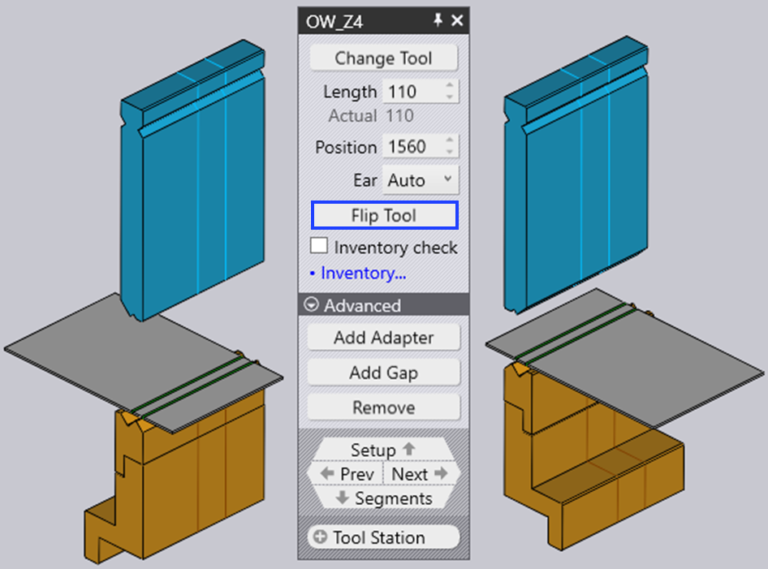

Editar um suporte de ferramenta
Quando você clica em uma montagem de ferramenta, o painel Bend Mount é exibido e pode ser usado para editar várias configurações do suporte de dobra e para executar várias operações.
O painel Bend Mount

O painel Bend Mount se parece com a imagem ao lado. As configurações e operações exatas disponíveis irão variar, dependendo de se você está clicando em um punção, matriz ou montagem do adaptador. Além disso, algumas configurações podem estar disponíveis ou não, dependendo das capacidades da máquina.
-
Clique no botão Alterar tipo de ferramenta para substituir a ferramenta usada para a montagem selecionada com uma ferramenta diferente. (Consulte a seção abaixo para obter mais detalhes sobre o seletor de ferramentas que é usado para selecionar uma ferramenta de substituição).
-
A entrada Comprimento é usada para ajustar o comprimento da estação. Quando você digitar um novo valor aqui, o TecZone Bend vai compor a estação novamente usando um conjunto apropriado de segmentos para tentar corresponder ao comprimento solicitado o mais próximo possível. Você pode inspecionar visualmente os segmentos que estão sendo usados olhando para as linhas de limite de segmento exibidas no suporte de dobra.
-
A entrada Posição é usada para definir a posição da borda esquerda da montagem, ao longo da mesa ou barra de pressão da máquina. A posição também pode ser ajustada arrastando a montagem para a esquerda ou para a direita. (Veja a seção abaixo sobre como arrastar a montagem).
-
O seletor Buzina (exibido apenas para montagens de punção) pode ser usado para forçar o TecZone Bend a usar a esquerda e/ou a direita ear[1] peças na composição).
-
A Girar ferramenta é usada para inverter a ferramenta (da frente para trás). Ela é exibida quando você está editando uma montagem que usa uma ferramenta assimétrica (como uma ferramenta de pescoço de ganso, por exemplo). A operação de inversão é inteligente o suficiente para descobrir se suportes e ferramentas adicionais precisarem ser invertidas para manter a consistência. Por exemplo, na imagem abaixo, invertendo o punção OW_Z4 (usado para dobra em Z) também inverte a matriz, o suporte e até mesmo a peça para manter a consistência do processo:
 -
O Adicionar adaptador é usado para adicionar um extensor para aumentar a altura do punção ou da matriz. Quando você adiciona um adaptador, o adaptador é selecionado e o painel para o adaptador é exibido (isso permite que você altere o adaptador real sendo usado, ou o remova).

-
O Adicionar fenda é usado para adicionar uma lacuna na montagem da ferramenta para permitir que um flange passe sem colisões (veja a seção abaixo em Adicionar uma lacuna para mais detalhes sobre isso).
-
Grande altura da ferramenta é usada para substituir as ferramentas selecionadas por diferentes ferramentas mais altas da mesma família.
-
Clique em Remover para remover o suporte da ferramenta. Será exibido um erro de punção faltando ou matriz faltando no navegador de dobra para dobras que estão usando esta estação, e isso pode ser corrigido usando o Add na barra de comandos na esquerda para adicionar uma nova montagem.
-
O seletor Ferramenta sensora é usado para percorrer os diferentes pares de discos apalpadores ACB que podem ser usados para esta peça. A seleção depende da espessura da chapa e do punção sendo usada.
-
Se a caixa de seleção Controle de quantidade de peças estiver marcada, os segmentos usados são verificados em relação ao inventário disponível de peças (que pode ser editado clicando no link Gestão de ferramentas…). Se segmentos que não estão no inventário são usados, um símbolo especial de trevo é desenhado neles, como você pode ver na imagem abaixo para as peças de 40mm e 45mm perto do centro do punção abaixo:

Quando você edita uma montagem de ferramenta usando qualquer uma dessas configurações e operações, o TecZone Bend valida imediatamente o status de todas as operações de dobra, realizando várias verificações como colisão, usabilidade da ferramenta, etc. O status do navegador de dobras é atualizado imediatamente e em tempo real, tornando muito fácil experimentar várias configurações com feedback imediato e preciso.
A janela Substituir Ferramenta
Ao clicar no botão Alterar tipo de ferramenta, a janela Ferramenta de Substituição é exibida:

Esta janela exibe todas as ferramentas de substituição possíveis.
-
Use a hierarquia à esquerda para restringir as opções. Por exemplo, você pode optar por exibir apenas ferramentas de Pescoço de Ganso, para facilitar a seleção.
-
Use o seletor de classificação na parte superior para classificar as ferramentas por nome, altura, raio ou outros critérios de classificação (o conjunto exato de critérios de classificação depende de você estar substituindo um punção, matriz ou adaptador).
-
Você pode digitar um nome de ferramenta (ou nome abreviado) na caixa Pesquisar para restringir a lista. Digitar um nome de ferramenta parcial também é bom. Usando OW200, por exemplo, corresponderá às ferramentas OW200, OW200/S e OW200/K.
-
Use o controle deslizante Escala para ajustar os tamanhos das imagens da ferramenta. A ferramenta que é usada atualmente tem um preenchimento azul e um contorno grosso. A hachura cruzada em azul-claro indica outras ferramentas que são usadas nesta peça.
-
Desligue a caixa de seleção Filtro para ter uma visão irrestrita de todas as ferramentas (independentemente de serem adequadas ou não). Nesta visão, as ferramentas que não são adequadas estão acinzentadas, e mover o mouse sobre uma dessas ferramentas indica por que ela não está disponível para seleção:

Ao mover o mouse sobre as imagens da ferramenta, TecZone Bend recalcula imediatamente os suportes de ferramentas selecionados usando a ferramenta recém-selecionada, e você pode ver em tempo real se a ferramenta que você está considerando causará algum problema de colisão ou não (as dobras correspondentes no navegador de dobras acenderão instantaneamente em vermelho se houver uma colisão). Esta pré-visualização em tempo real torna muito fácil para você experimentar com várias opções de ferramentas até encontrar uma que funcione.
Se você clicar em uma das ferramentas, a escolha é feita e a nova ferramenta é aplicada para a peça. Se você pressionar Esc em vez disso, as opções de visualização que você fez são revertidas e a ferramenta original é deixada inalterada.
Navegação e seleção
O painel de suporte de dobra exibe vários botões nos subpainéis de navegação e seleção.
-
Use o botão de navegação Fixação para subir para editar toda a configuração de dobra. Consulte a página do editor de configuração para obter mais detalhes sobre isso.
-
Use os botões Continuar e Voltar para percorrer a edição de diferentes montagens de ferramentas nesta configuração.
-
Use o botão de navegação Divisão em peças para descer um nível e editar os segmentos individuais que compõem esta montagem. A seção abaixo sobre editar segmentos montados em ferramentas fornece mais informações sobre isso.
-
Use o seletor Estação de ferramenta para selecionar todos os suportes de ferramentas inventando esta estação. Isso selecionará todos os punções, matrizes e suportes que estão alinhados com a montagem selecionada, para que todos possam ser editados ou movidos juntos.
-
Use o seletor Ferramenta igual para selecionar outras montagens de ferramentas que usam a mesma ferramenta. Isso geralmente é útil antes de usar uma operação de troca de ferramenta; selecionar todas as estações usando a ferramenta especificada amplia a seleção disponível de ferramentas de substituição.[2]
Editar vários suportes

Se você selecionar várias montagens usando Shift+Clique em todas elas, elas podem ser editadas juntas. Somente configurações e operações que são comuns a todas as montagens estão disponíveis para edição.
Campos como Comprimento ou Posição são exibidos para edição, somente se forem iguais para todas as montagens.
Se você tiver várias estações, é útil selecionar todos os punções ou todas as matrizes antes de fazer uma operação de troca de ferramenta. Neste caso, a escolha das ferramentas de substituição disponíveis é mais extensa (uma vez que não há perigo de diferentes punções e matrizes causarem uma colisão).
Arrastar um suporte de ferramenta de dobra

A entrada Posição pode ser usada para definir uma posição precisa para uma montagem.Às vezes, é mais fácil simplesmente arrastar uma montagem de dobra para uma nova posição. Para fazer isso:
-
Clique na montagem de dobra para selecioná-la (selecione várias montagens usando Shift+Clique)
-
Clique e comece a arrastar para a esquerda/direita para mover a montagem selecionada.Como mostra a imagem acima, quando você move o mouse sobre uma montagem selecionada, a seta é exibida indicando que você pode arrastar a montagem selecionada. Quando você está arrastando a montagem, os indicadores de encaixe permitem que você alinhe facilmente a montagem para outras montagens existentes.
Se você pegar uma montagem perto de sua borda esquerda, então as bordas esquerdas de todas as montagens são usadas para encaixe. Se você pegar uma montagem pelo centro, então a linha central é usada para encaixar, e assim por diante.
Operações avançadas
Aqui estão algumas operações mais avançadas com o painel do editor Montagem de dobra.
Edição de segmentos de suporte de ferramentas
Clicar no botão de navegação Segmentos quando uma montagem de ferramenta de dobra estiver sendo editada abre o painel Segmento de ferramenta, que se parece com a imagem ao lado.

-
O seletor Ferramenta é usado para substituir o segmento de ferramenta selecionado com uma peça mais longa ou mais curta, ou um tipo diferente de peça.
-
Os botões Deslocar > e < Deslocar são usados para deslocar o segmento selecionado para a esquerda ou para a direita na composição. Isso não muda o comprimento total da composição, mas é útil para mover uma peça de sensor de medição esquerda ou direita para evitar furos, por exemplo.
-
Os botões Remover e Adicionar são usados para adicionar novos segmentos na composição ou para remover o segmento selecionado.
-
Os botões de navegação Continuar e Voltar são usados para alternar através da edição dos diferentes segmentos na montagem dobrada. Como mostra a imagem acima, o segmento da ferramenta que está sendo editado é destacado em azul.
-
O botão de navegação Equipar é usado para subir um nível e editar todo o suporte de dobra, em vez de segmentos individuais.
Adicionando uma lacuna em uma montagem
Às vezes, é útil adicionar uma lacuna estreita em uma montagem de ferramenta, geralmente para permitir que um flange passe sem colisão. Para fazer isso, clique no botão Adicionar fenda (que aparece se a montagem da ferramenta for longa o suficiente). Uma pequena seção se abre no painel, com um conjunto de entradas interligadas para definir a margem esquerda, margem direita e lacuna real. Uma vez que a soma dessas três deve adicionar ao comprimento de montagem da ferramenta, editar duas delas vai definir a terceira automaticamente.
A imagem abaixo mostra esta operação em andamento. Temos um flange que colide com o punção, e ajustamos as margens Esquerda/Direita até que a lacuna proposta seja alinhada com onde o flange cruza o punção (você pode ver a lacuna proposta sendo exibida como duas linhas laranja traçadas no suporte de dobra).

Quando você clica no botão Ok neste subpainel, a lacuna é criada e você pode ver que o erro de colisão agora está resolvido:

| Ao editar uma estação que usa um suporte de punção, TecZone Bend pergunta se a lacuna deve ser introduzida apenas para o punção ou para o punção e o suporte. |
Usando um adaptador V duplo
É possível usar um adaptador de V duplo para montar duas matrizes uma ao lado da outra. Para fazer isso manualmente, use o botão Adicionar adaptador para adicionar um adaptador para uma matriz e, em seguida, use o botão Alterar tipo de ferramenta para alterar esse adaptador para um adaptador de V duplo. Agora, é possível adicionar uma segunda matriz à outra ranhura do adaptador de V duplo usando o comando Adicionar da barra de comandos e escolhendo uma montagem de matriz.
Quando você tem uma matriz montada em uma ranhura de um suporte de V duplo, você pode deslocá-la para a outra ranhura clicando no botão Alterar o eixo I que é exibido: